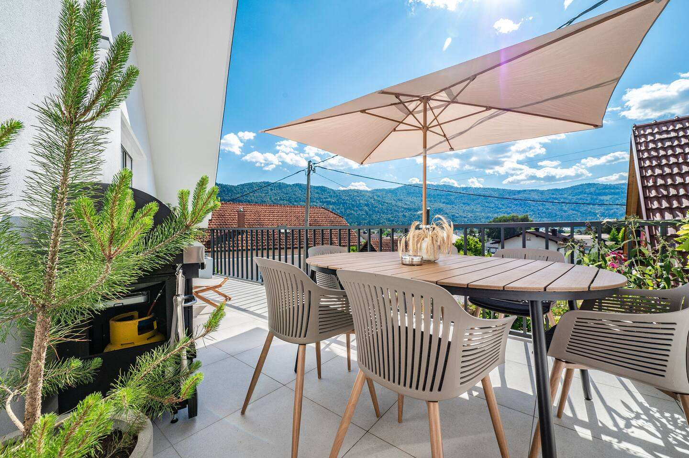
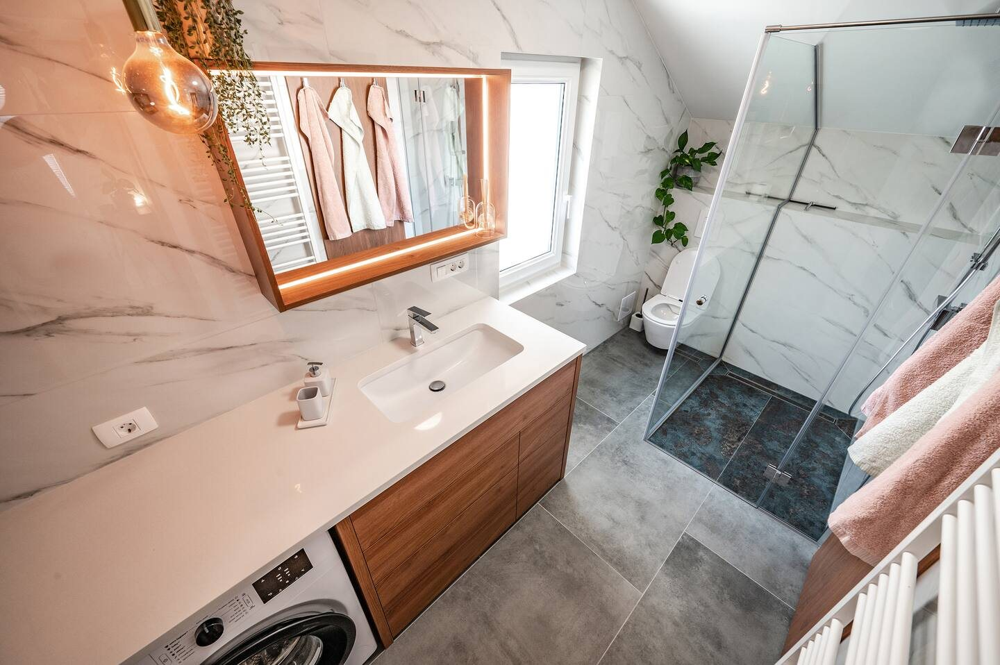
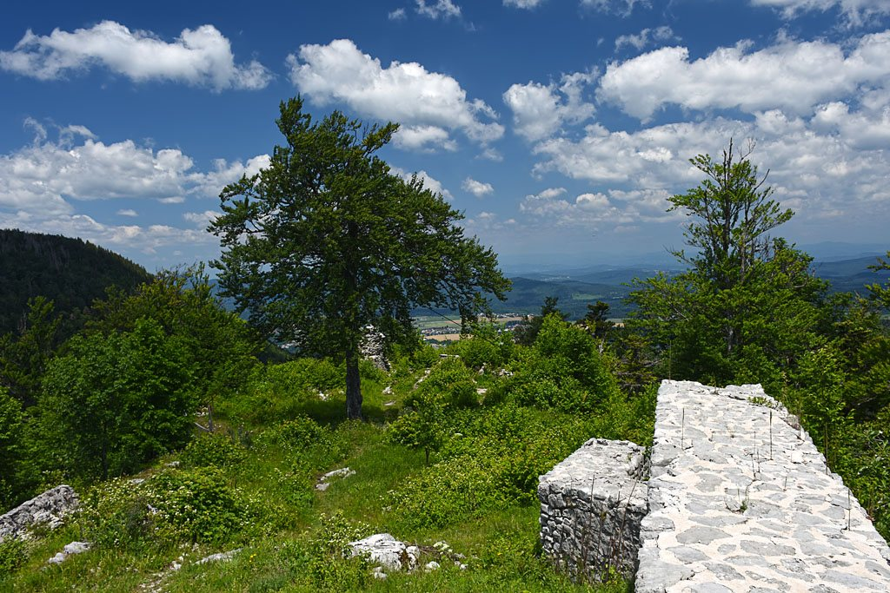

Apartma v Kočevju, blizu Kočevskega jezeraApartment in Kočevje, near Lake Kočevje
Apartma v Kočevju
Apartma v Kočevju
Vaše izhodišče za oddih ob jezeruApartment in Kočevje
Your base for a lakeside break
Dobrodošli v Strato Apartmentu, leta 2025 v celoti prenovljen in posodobljen. 74 m² za do 5 oseb. Kočevsko jezero je približno 270 m od apartmaja, približno 400 m do središča Kočevja.Welcome to Strato Apartment, fully renovated and modernised in 2025. 74 m² for up to 5 guests. Lake Kočevje is about 270 m from the apartment, about 400 m to Kočevje town centre.
Doživite Kočevsko.
Doživite mir.Experience Kočevsko.
Experience calm.

Kdo smoWho we are
Dobrodošli
Dobrodošli
pri nas
v KočevjuWelcome
to our place
in Kočevje
Sva Barbara in Rok, gostitelja Strato Apartmenta. Govorimo slovensko, angleško, hrvaško in srbsko. Prijava je mogoča osebno ali samostojno s kodo.We are Barbara and Rok, the hosts of Strato Apartment. We speak Slovenian, English, Croatian and Serbian. Check-in is possible in person or with a self check-in code.
Apartma je bil leta 2025 v celoti prenovljen.The apartment was fully renovated in 2025.
Dnevna soba s TV, klavirjem, kitaro in tolkali, otroškimi igračami in družabnimi igrami; neposreden izhod na teraso.Living room with TV, piano, guitar and percussion, children's toys and board games; direct access to the terrace.
ApartmaApartment
Sodoben apartma v Kočevju


Sodoben apartma v Kočevju
ob jezeruA modern apartment in Kočevje
by the lake
Strato Apartment meri 74 m² in sprejme do 5 oseb: 2 spalnici (velika zakonska postelja in zakonska postelja) ter raztegljiv kavč. Popolnoma opremljena kuhinja: kavni aparati, kuhalnik vode, blender, pomivalni stroj, indukcijska plošča, pečica, hladilnik, mikrovalovna pečica, osnovna živila. Kopalnica s tušem, pralni stroj, sušilec za lase, kozmetično ogledalo. Ogrevanje s toplotno črpalko, klimatska naprava. Brezplačen WiFi, otroška posteljica, zasebni vhod, copati, dežniki, knjiga gostov.Strato Apartment measures 74 m² and sleeps up to 5 guests: 2 bedrooms (a king-size and a double bed) plus a sofa bed. Fully equipped kitchen: coffee machines, kettle, blender, dishwasher, induction hob, oven, fridge, microwave, basic supplies. Bathroom with shower, washing machine, hair dryer, cosmetic mirror. Heat-pump heating and air conditioning. Free WiFi, baby cot, private entrance, slippers, umbrellas, guest book.
Velika spalnica – zakonska posteljaLarge bedroom – king-size bed
Manjša spalnica – TV in XboxSecond bedroom – TV and Xbox
Terasa in vrt – senčnik, žarTerrace and garden – sunshade, barbecue
Kopalnica – tuš, pralni strojBathroom – shower, washing machine

GalerijaGallery


Poglejte si apartmaTake a look inside


Lokacija na zemljeviduLocation on the map
Zemljevid odprete v Google Zemljevidih – na strani ne nalagamo zunanjih vsebin.The map opens in Google Maps – no external content is loaded on the page.
Odpri zemljevidOpen the map270
270 m do jezera270 m to the lakeKočevsko jezeroLake Kočevje
DostopnostGetting around
Kočevsko jezero je približno 270 m od apartmaja, približno 400 m do središča Kočevja. Zasebno parkirišče in dvorišče na posesti.Lake Kočevje is about 270 m from the apartment, about 400 m to Kočevje town centre. Private parking and courtyard on the property.
Lokacija na zemljeviduLocation on the mapTrata VI 11
1330 Kočevje, SI

Kočevsko jezeroLake Kočevjepribližno 270 m od apartmajaabout 270 m from the apartmentFotoPhoto: Ostrorogi, CC BY-SA 4.0, Wikimedia Commons

Pragozd KrokarKrokar virgin forestpragozd na Unescovem seznamuUNESCO-listed virgin forestFotoPhoto: Ljuba brank, CC BY-SA 3.0, Wikimedia Commons

Grad FridrihštajnFridrihštajn Castlerazvaline gradu nad Kočevjemcastle ruins above KočevjeFotoPhoto: Vid Pogačnik, CC BY-SA 4.0, Wikimedia Commons

Željnske jameŽeljne caveskraške jame tik ob mestukarst caves just outside townFotoPhoto: Vid Pogačnik, CC BY-SA 4.0, Wikimedia Commons

Reka KolpaKolpa riverkopanje in raftingswimming and raftingFotoPhoto: Ajznponar, CC0 1.0, Wikimedia Commons
Več iz vodnika: More from the guide: MTB trail center Kočevje · Poyek Wildlife Adventures · Ars Naturae Wildlife adventures · Bunker Škrilj · Reško jezero · Kraljica Roga · Grad Kostel · Ranch Marina
Poglej na zemljeviduView on the map
Lokalno bivanjeLocal stay
Bivajte v Kočevju z lokalno izhodiščno točkoStay in Kočevje with a local base
Strato Apartment vam ponuja apartmajsko bivanje blizu Kočevskega jezera, središča mesta in izletov po Kočevskem.Strato Apartment offers an apartment stay close to Lake Kočevje, the town centre and day trips across Kočevsko.
Blizu jezera in središčaNear the lake and the centre
Kočevsko jezero je približno 270 m od apartmaja; približno 400 m do središča Kočevja.Lake Kočevje is about 270 m from the apartment; about 400 m to Kočevje town centre.
Zasebno parkiriščePrivate parking
Zasebno parkirišče in dvorišče na posesti. Brezplačen WiFi, otroška posteljica, zasebni vhod, copati, dežniki, knjiga gostov.Private parking and courtyard on the property. Free WiFi, baby cot, private entrance, slippers, umbrellas, guest book.
Narava na doseguNature within reach
Terasa s senčnikom, vrt, prostor za žar. Ogrevanje s toplotno črpalko, klimatska naprava.Terrace with sunshade, garden, barbecue area. Heat-pump heating and air conditioning.
Pogosta vprašanjaFrequently asked questions
Kdaj je prijava in odjava?When are check-in and check-out?
Prijava od 15:00 (osebni sprejem ali samostojna prijava s kodo). Odjava do 11:00.Check-in from 15:00 (in person or self check-in with a code). Check-out until 11:00.
Ali so hišni ljubljenčki dovoljeni?Are pets allowed?
Ne. Kajenje samo na terasi in zunaj; nočni mir 22:00–07:00; hišni ljubljenčki niso dovoljeni.No. Smoking only on the terrace and outside; quiet hours 22:00–07:00; pets are not allowed.
Ali je parkirišče na voljo?Is parking available?
Zasebno parkirišče in dvorišče na posesti.Private parking and courtyard on the property.
Kako daleč sta jezero in središče?How far are the lake and the centre?
Kočevsko jezero je približno 270 m od apartmaja; približno 400 m do središča Kočevja.Lake Kočevje is about 270 m from the apartment; about 400 m to Kočevje town centre.
Kaj je v kuhinji?What is in the kitchen?
Popolnoma opremljena kuhinja: kavni aparati, kuhalnik vode, blender, pomivalni stroj, indukcijska plošča, pečica, hladilnik, mikrovalovna pečica, osnovna živila.Fully equipped kitchen: coffee machines, kettle, blender, dishwasher, induction hob, oven, fridge, microwave, basic supplies.
Katere jezike govorita gostitelja?Which languages do the hosts speak?
Govorimo slovensko, angleško, hrvaško in srbsko.We speak Slovenian, English, Croatian and Serbian.
Ocene gostovGuest reviews
Kaj pravijo gostjeWhat guests say
9,9
Booking.com9,9 / 10 (10 ocen) – Izjemno; osebje 10, čistoča 10, udobje 10, lokacija 9,69.9 / 10 (10 reviews) – Exceptional; staff 10, cleanliness 10, comfort 10, location 9.6
5,0
Airbnb5,0 / 5 (9 ocen) – Izbira gostov (Guest favourite)5.0 / 5 (9 reviews) – Guest favourite
Na poti v Budimpešto smo se ustavili pri Barbari in Roku za eno noč in našli pravi zaklad. Hiša je čudovita, okusno opremljena in ima zelo sproščujoče vzdušje. Terasa je miren prostor za branje ali obedovanje. Rok in Barbara sta bila zelo prijazna in proaktivna od prvih sporočil.On our way to Budapest we stopped at Barbara and Rok's for one night and found a real treasure. The house is beautiful, tastefully furnished and very relaxing. The terrace is a quiet place for reading or dining. Rok and Barbara were very kind and proactive from the very first messages.
ChristelAirbnb · avgust 2025August 2025 · prevedenotranslated
Bivanje je bilo neverjetno: stanovanje je 100 % skladno s fotografijami in opisom. Je toplo in prijetno, kot doma. Gostitelj je bil vedno na voljo. Toplo priporočam!The stay was incredible: the apartment matches the photos and description 100%. It is warm and cosy, just like home. The host was always available. Highly recommended!
SebastianoAirbnb · januar 2026January 2026 · prevedenotranslated
Čudovito, na novo prenovljeno stanovanje. Imelo je vse, kar smo potrebovali. Gostitelji so bili zelo prijazni.A wonderful, newly renovated apartment. It had everything we needed. The hosts were very friendly.
JanaAirbnb · julij 2026July 2026 · prevedenotranslated
Nastanitev je bila zelo čista in moderno opremljena. Kljub poznemu prihodu ob 01:30 ponoči smo se še vedno udobno prijavili.The accommodation was very clean and modern. Despite our late arrival at 01:30 at night we could still check in comfortably.
MartinBooking.com · AvstrijaAustria · prevedenotranslated
Zelo lepo, kakovostno in novo stanovanje s super prijaznima gostiteljema, v čudoviti pokrajini.A very beautiful, high-quality new apartment with super friendly hosts, in wonderful countryside.
CindyBooking.com · NemčijaGermany · prevedenotranslated
RezervacijaReservation
Preverite proste termineCheck available dates
Ali pokličiteOr get in touch
Prijava od 15:00 (osebni sprejem ali samostojna prijava s kodo). Odjava do 11:00. Kajenje samo na terasi in zunaj; nočni mir 22:00–07:00; hišni ljubljenčki niso dovoljeni.Check-in from 15:00 (in person or self check-in with a code). Check-out until 11:00. Smoking only on the terrace and outside; quiet hours 22:00–07:00; pets are not allowed.
PokličiCall +386 40 251 540 Pošlji e-poštoSend an e-mail
KontaktContact
Pišite namaWrite to us
PodatkiDetails
Barbara & Rok
Trata VI 11, 1330 Kočevje, Slovenija
+386 40 251 540
strato.apartment@gmail.com
Green & SafeLogo Green & Safe (pošljeta gostitelja)Green & Safe logo (to be supplied by the hosts)